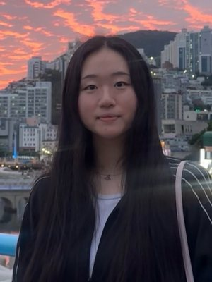

Playground: A Line Between Us begins with two games we played as children. We traced shapes on a friend’s back and waited for them to feel what we meant. We drew in the sand and let it be smoothed away. These were ways of speaking before we had the right words, and they were gone almost as soon as they were made.
A visitor draws on a soft fabric with their fingertip. Under the fabric, small sensors sit in a grid form. Each one feels only the small patch above it, so no single sensor ever sees the whole gesture. The machine weaves these separate threads together to work out what the hand was doing.
Our own skin works this way too. Touch receptors are scattered across the skin, and the brain stitches their signals into one sensation. What looks like imprecision in the machine is really just how touch works.
So it never copies the drawing. It reads how you drew: tender or rushed, light or pressing. That impression appears as words on a small screen. Then the machine retraces your gesture into the sand. When the tracing is done, it carries the drawing on with lines of its own, in the strength and style it read from yours, the way a friend might murmur something back.
Before leaving, the visitor smooths the sand and leaves it clear for the next person. Nothing is saved. What you carry away is a feeling more than a picture: that something tried to understand you, got it a little wrong, and answered anyway.

Jiwon Yang
Department of Design, Seoul National University
Jiwon Yang is a designer working across physical computing, interactive installation, and creative coding, currently completing a B.F.A. in Design at Seoul National University, with an exchange semester in Interaction Design at the University of Sydney. She is presently a student intern at the Affective Systems and Cognition Lab, KAIST. Her work turns sound, touch, and light into experiences that the full body reads.
Chang Hee Lee
Department of Industrial Design, KAIST
Chang Hee Lee is an Associate Professor in the Department of Industrial Design at KAIST. Before joining KAIST, he was a Tutor and 2nd Year Programme Leader (Assistant Professor) in Innovation Design Engineering, jointly run by the Royal College of Art and Imperial College London. His research explores human computer interaction, design engineering, multisensory interaction, and posthuman perspectives.